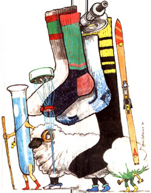

SOCKS are almost too personal. A pair of socks can live anonymously in your sock drawer for years, or can call out to you whenever its opened. They are the undergarment that shows. They are somber, over-the-calf business socks, confidently white athletic socks, thick and light. They are pink argyles you wear only to parties, and they are your Saturday socks.
I remember my Saturday socks. Yellow gold and of a fuzzy material that felt good when I pulled them on before listening to "Big John and Sparky" on the radio in the morning. With them I announced to myself that Saturday was mine. Now, on weekend mornings full of more stress than the ones I spent as a kid, I catch myself looking for them in my sock drawer.
Socks are next to the skin. They are underwear for the feet.
The foot is a mechanical wonder, a most adaptable appendage. It is a forest of sensitive nerves, a legacy of our distant past when feet were almost as useful for exploring the world as hands. As the foot's shape changes constantly with angle and pressure, its pliant form is kept taut by a web of impressive muscles. These muscles, dozens of them, are sustained by a high-volume blood supply. Straining and relaxing with each step, each shift in balance, the muscles use sweat glands to expel the heat of their work in the form of water vapor. There you have it: strong, sweaty feet, imprisoned when we aren't barefoot and occasionally producing an odor offensive to everyone.
In truth it is not feet that produce unkindly odor but microorganisms that flourish in perspiration and oils, dark and heat. The intelligent foot-owner will cover the extremity with a porous layer that can wick away some of the moisture given off by exertion, insulate the nerve-dense foot against cold and heat and buffer the interface between foot and shoe.
The traditional material for this layer was wool, and the traditional technology that went with it was of a fairly high order: Instead of weaving a flat cloth to be pieced around the foot (the way Russian soldiers do it), it was possible to twist large, light yarns and produce a seamless, form-fitting product by knotting them-that is to say, knitting. Wool has a strong crimp ("spring") and a major advantage over cotton. Cotton dries from the outside, retaining its last moisture on the inside next to the foot, while wool dries from the inside out, so that anything less than full saturation places a measure of comfort next to the skin.
Silk arrived in the western world from China. Strong yet light in weight, the material provides ample warmth and water conduction. It is also a high-care fabric and expensive, used pretty much only by the rich until modern times. Silk underwear and sock liners are now widely available; they are warm and, like wool, wick moisture away from the skin. But they are still fairly expensive, still demand careful washing, and their natural advantages have been surpassed by new synthetics.
In the 1930s and '40s the large chemical producers, most notably DuPont, invested sums that rivaled the silk-trade fortunes to find new synethic fibers. Today these are a basic part of our wardrobe: nylon, Dacron, Orlon, rayon and others. At first, the new synthetic fabrics lacked the hand (the feel of comfort and quality, but they did hold up much longer than natural fibers.
They should always fit your feet like a glove.
Early blends, such as Orlon with cotton, resulted in an inexpensive sock with good stretch and lasting wear. The feel, however, remained clammy and the socks smelled even worse than before. The early Orlon fiber absorbed odor and wouldn't let go.
The test tubes could have bubbled on for decades, creating new polymer chains for fibers every six months. But the economics of development turned down the gas. In the late '70s the chemical industry let the fabric industry know that it would concentrate on improving and developing the potential of the fibers it already had.
Existing synthetics could be "texturized." They could be spun with varying crimp, loft and even with hollow cores to hold insulating air space. Some fibers, when woven, became hydrophobic (repelled water. Synthetic fibers that transferred water extremely well with a rapid capillary wicking action were called hydrophilic. In the mid-18th century, the Jacquard loom used punched cards to weave figured fabric, making it one of the earliest programmable computers. In the last quarter of the 20th century, computer-driven looms are able to weave seamless socks of varying thicknesses, materials and strengths, including the padded sock.
Where does this leave us? With a simple golden rule for choosing socks: They should fit the activity.
Ski boots are designed for minimum flexure. Socks for ski boots are thin but insulating. The Nelson company uses Thermax (a recent hydrophilic fiber with a hollow core to wick moisture away. Thor-Lo uses their own "Foot Health" yarn. Some ski socks have a strip of padding atop the shin, some have a box of extra insulation over the toe, some have heel pads. A good ski sock is not bulky, will not bunch, absorbs some friction; it essentially inserts that thin layer of breathing comfort between the unyielding boot and your yielding foot.
Running socks absorb friction and even impact. While competition socks are thin and extremely light, training designs use pads of yarn fringe and thick material as a buffer against the pounding weight of the runner's own body on hard surfaces. The fabric should wick away heat and moisture. Light cotton socks hold up for- short runs, but their water conductivity is limited; once wet, they cause trouble.
Tennis socks have heel impact pads and protection around the "squeeze" of the toe; the forceful stops and turns of the sport can cause blisters in the space of a game.
Socks for pedestrian activities such as walking, hiking or trekking answer more stringent demands. A tennis game or even a marathon are over in an afternoon, but a day's walking, with or without a load on your back, demands a lasting comfort zone between your dogs and your clogs. That buffering zone must absorb all the friction between a shoe and a foot-each of which flexes quite differently. It must insulate against the snow in the winter and against the frying pavement in the summer. It must deal with the transport of water and still stay dry next to your sensitive skin.
Socks are underwear for the feet.
Patagonia concerns itself primarily with hiking, trekking and sailing. Their approach to socks is predictably intelligent and versatile. They offer three weights of socks on a single theme, using hydrophobic polypropylene fibers next to the skin and Hydrofil knit fiber outside it. The polypro will not absorb water and passes it quickly and directly to the Hydrofil, which sponges it up and distributes it over its surface, thus drying as quickly as possible with a comfort layer next to your feet. Patagonia also makes Hydrofil liners for use with hiking boots.
There are special socks made for aerobics, soccer, cycling, basketball, climbing, walking, hiking and even for trout fishing (thigh-high wader socks with pads at the knees. I know my old die-hard, natural-fiber trailmates will think of them as just another ruse to part fools from their money, but I suspect that our feet will be the real beneficiaries in the end.
I know my old die-hard, natural-fiber trailmates will think of special socks as just another ruse to part fools from their money. Cotton is wonderful stuff. It's great for shirts and sheets and bandannas, but it isn't at its best inside the confines of a working shoe.
Wool is wonderful stuff, but it won't last for an entire season, and all-wool socks require more delicate care than a prize goldfish. Natural fibers have good qualities that can be extended by synthetics. Comfort can be extended. Because a sock of such materials lasts miles longer, economy can be extended. The miles you walk without developing a blister can be extended.
The message that technology is whispering in our ears is this: Buying a $250 pair of ski boots and tugging on a pair of $2.50 socks to wear under them is not giving you your very best chance on the slopes. The anthropometric design energy that went into your high-tech Nike Airs is undercut by a pair of bad tube socks.
A simple rule: Buy your socks as carefully as you buy your boots. Rule two: Buy your socks before you buy your boots and take them with you when you fit your feet for hiking boots, tennis shoes, ski boots, soccer shoes or those flashy two-tone golf spikes with the silly damned fringe in the front.
|
 |
|
|